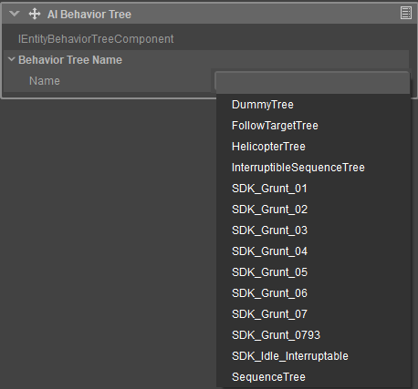

AI Behavior Tree
Allows users to specify, from a dropdown menu, the Behavior Tree an Entity should run.

Behavior Tree component
For Behavior Trees to appear within the dropdown menu however, they need to be saved under the Scripts/AI/BehaviorTrees directory of your project. Please refer to the Implementing The Behavior Tree in The Behavior Tree Editor section for an example.
| Setting | Description |
|---|---|
| Name | Name of the behavior tree saved under the Scripts/AI/BehaviorTrees directory of your project. |
AI Cover User
The Cover User component works together with movement system and provides an ability to use covers for the entity. Covers are user designed objects (Cover Surface) placed in Sandbox.
| Setting | Description |
|---|---|
| Min Effective Cover Height | Minimal effective height for the cover to be usable by the cover user and not to be compromised. |
| In Cover Radius | Radius used to block nearby cover locations when the agent is in cover. |
| Distance To Cover | How far the cover user can be from the exact cover location. |
| Blacklist Time | How long the compromised cover location will be considered as not valid for further cover queries. |
AI Faction
The Faction component stores the faction of the entity. Factions and their relations are defined in the Faction Map (Scripts/AI/Factions.xml).
| Setting | Description |
|---|---|
| Faction | Here you can choose the faction your entity belongs to. |
AI Listener
The Listener component registers the entity to AuditionMap and makes it able to perceive sound stimuli. The component is notified when any interesting stimuli is heard.
| Property/Setting | Description | ||||||||
|---|---|---|---|---|---|---|---|---|---|
| Factions To Listen To | Only sound stimuli whose source entities belong to these factions will be processed. | ||||||||
Listening Distance Scale | An optional scale that can be applied to increase or reduce the listening distance. | ||||||||
Ear Locations | A collection of locations that will determine if the entity is within hearing range of sound stimuli. Can also be used to cast rays to these locations to determine sound obstruction fall-offs and such.
| ||||||||
Use Custom Filter | Whether the custom condition filter should be used (Schematyc 'ListenerCustomFilter' signal). |
AI Navigation Agent
The Navigation Agent component gives the ability to navigate in space, finding paths to desired destinations, following them, and also trying to avoid collisions with other agents.
| Property | Description | ||||||||||||||||
|---|---|---|---|---|---|---|---|---|---|---|---|---|---|---|---|---|---|
| Navigation Agent Type | Type of the navigation agent, specifying which NavMesh will be used by the agent (agent types are defined in Scripts/AI/Navigation.xml). | ||||||||||||||||
| Update Transformation | When set to true, the Navigation Component automatically updates the entity's transformation by computed requested velocity (position and rotation). When false, the requested velocity should be passed to other systems. | ||||||||||||||||
Movement |
| ||||||||||||||||
Collision Avoidance |
| ||||||||||||||||
Navigation Query Filter |
|
AI Navigation Markup Shape
The Navigation Markup Shape component is used to create markup shapes, allowing to 'mark' triangles in the NavMesh with various annotations (area types and flags). Annotations can be set in the Scripts/AI/Navigation.xml config file.
| Property | Description | ||||||||||||||
|---|---|---|---|---|---|---|---|---|---|---|---|---|---|---|---|
| Ignore Geometry in MNM | When activated, the Entity's geometry is ignored in NavMesh generation. | ||||||||||||||
| Shapes | Clicking on the dropdown menu icon next to the Shapes section will reveal a list including the following options:
When a new Shape is added, following settings will appear on the Properties panel:
|
AI Observable
The observable component registers the entity to VisionMap and makes it able to be "seen" by other entities that are registered as Observers.
| Property | Description | ||||||||
|---|---|---|---|---|---|---|---|---|---|
| Vision Map Type | Combination of flags to identify the type of the observable. | ||||||||
Observable Locations | Positions, offset from the pivot or bones, that are checked for visibilty by Observers.
|
AI Observer
The observer component registers the entity to VisionMap and makes it able to see other entities that are registered as Observables.
| Setting | Description | ||||||||
|---|---|---|---|---|---|---|---|---|---|
| Vision Map Type | Combination of flags to identify the type of the observer. | ||||||||
| Vision | Configuration of the vision sensor with which the entity can observe the world.
| ||||||||
| Location | Location of the eye sensor; offset from Pivot or Bone position).
| ||||||||
| Vision Blocking |
| ||||||||
| Types To Observe | Only entities that belong to these vision map types will be processed for sight. | ||||||||
| Factions To Observe | Only entities that belong to these factions will be processed for sight. | ||||||||
| Use Custom Filter | Whether the custom condition filter should be used or not such as Schematyc's ObserverCustomFilter signal. |